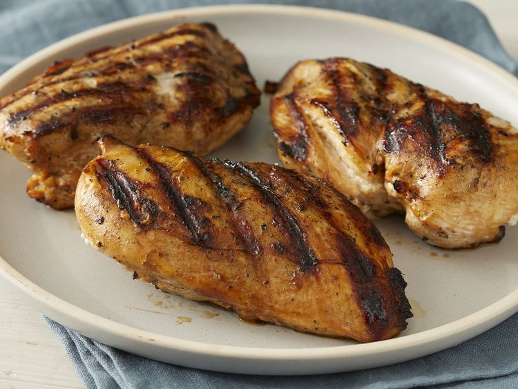

Chicken Marinade

Descriptions
This chicken marinade adds great flavor and a beautiful caramel color to tender, juicy grilled chicken.
This easy recipe is a must-try! For best results, don't marinate the chicken for more than 4 hours, or the lemon juice will affect the texture.
Ingredients
- 2 tablespoons liquid smoke flavoring
- 2 tablespoons spicy brown mustard
- 2 teaspoons ground black pepper
- 2 teaspoons garlic powder
- 4 skinless, boneless chicken breast halves
Steps
- Gather the ingredients.
- Mix olive oil, soy sauce, lemon juice, liquid smoke, mustard, pepper, and garlic powder together in a large glass or ceramic bowl.
- Place chicken in the bowl and turn to coat with marinade. Cover and marinate in the refrigerator for 1 to 4 hours. For best results, do not marinate longer than 4 hours.
- Preheat an outdoor grill for high heat and lightly oil the grate.